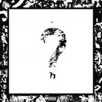

Estas son algunos artistas de los que me sé canciones en guitarra
Ed Maverick

Heroes del Silencio

Linkin Park

Aquí comparto algunas fotos y videos de cuando voy manejando


Estos son algunos pocos lugares a los que voy cada cierto tiempo


Estos son algunos artistas de los que escucho
xxxtentacion
Linkin Park
Travis Scott

Juice wrld

Aquí tenemos algunos de los titulos de videojuegos que suelo jugar